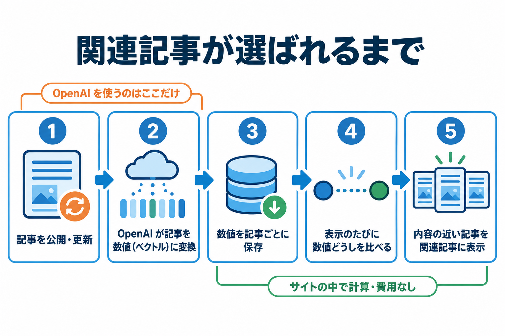
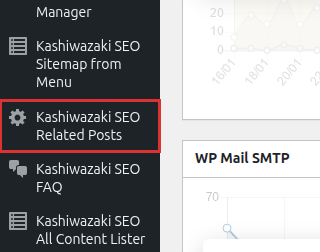
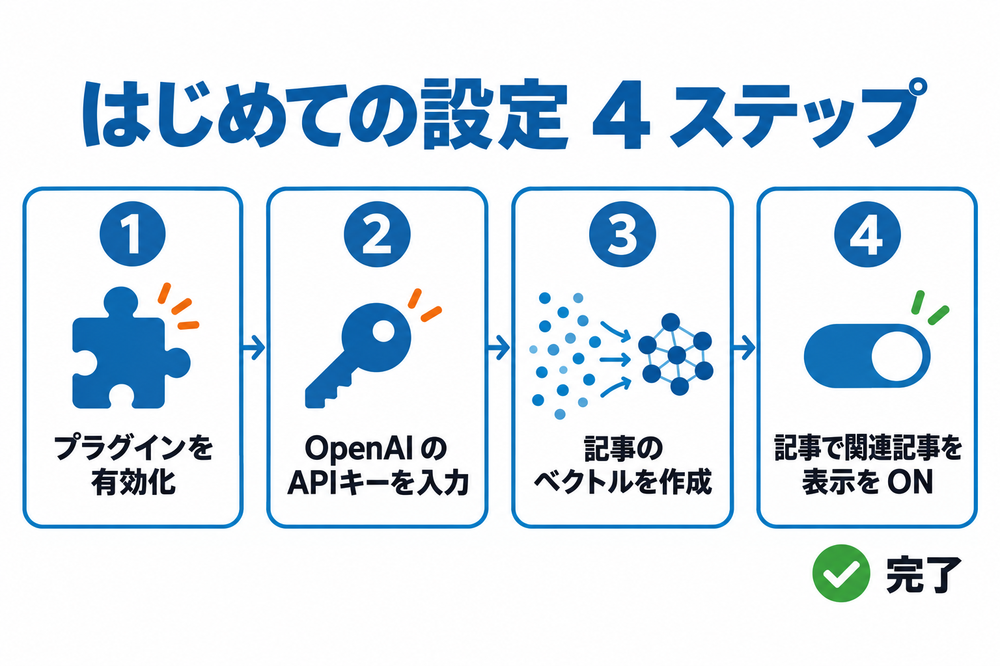

Kashiwazaki SEO Related Posts マニュアル
Kashiwazaki SEO Related Posts は、記事の本文まで読んで「内容が近い記事」を関連記事として自動で表示する WordPress プラグインです。OpenAI の Embeddings で記事を数値（ベクトル）に変えて比べるので、同じ言葉を使っていない記事でも、話題が近ければ関連記事に選びます。
このページの内容

できること
🧠
意味の近さで選ぶ
記事の内容を数値にして比べ、内容の近い記事を選びます。費用はほとんどかかりません。
🖼
3 つの表示形式
リスト・グリッド・スライダーと、6 色のカラーテーマから選べます。
⚙
3 段階の設定
共通設定・投稿タイプ別・記事ごとに、表示件数や見た目を変えられます。
- 関連記事の選び方を 3 つから選べます（意味の近さで選ぶ / 意味の近さ＋GPT / 従来の方式）。
- 使える embedding モデル・GPT モデルは OpenAI から自動で取得します。新しいモデルが出ると設定画面に表示されます。
- 選んだ関連記事は記事ごとに保存（キャッシュ）し、ページ表示を遅くしません。訪問者がページを開いたときに OpenAI を呼ぶことはありません。
- 本文の前・後・最初の段落の後に自動で入れるほか、ショートコードやウィジェットでも表示できます。
- OpenAI の APIキーは暗号化して保存し、API の呼び出し回数を GPT と Embedding に分けて確認できます。
- 設定画面の各項目には「?」のツールチップがあり、マウスを乗せると説明が出ます。

設定画面の場所
有効化すると、管理画面の左メニューに「Kashiwazaki SEO Related Posts」が追加されます。設定画面には 4 つのタブがあります。

| タブ・画面 | 何を設定するか | 説明ページ |
|---|---|---|
| 🤖 AIのAPI設定 | OpenAI の APIキー、関連記事の選び方、モデル、ベクトルの作成、API の呼び出し統計 | AIのAPI設定 |
| 🌐 共通設定 | サイト全体の初期値（関連記事に選ぶ範囲、表示件数、表示形式、色、見出し、挿入位置、キャッシュ期限） | 共通設定 |
| 📋 投稿タイプ別設定 | 投稿タイプごとの初期値（カスタム設定）、まとめて有効化、記事ごとの設定の一括反映 | 投稿タイプ別設定 |
| 📚 使い方 | セットアップの手順、ショートコードの書き方、全設定のリセット | ショートコード |
| 記事の編集画面 | その記事で関連記事を出すか、記事ごとの表示件数・見た目、関連記事の確認 | 記事ごとの設定 |
はじめて使うとき
インストールから関連記事が表示されるまでは 4 ステップです。手順は「はじめての設定」にまとめています。

新しい記事は「表示しない」で始まります
関連記事は、記事ごとの「この記事で関連記事を表示する」が ON の記事にだけ表示されます。新しく作った記事は OFF で始まるので、記事の編集画面で ON にするか、投稿タイプ別設定の「すべて有効化」でまとめて ON にしてください。
SEO・GEO（生成AI最適化）への効果
内部リンクの質が上がる
タグやカテゴリが同じというだけでなく、内容が近い記事どうしをリンクでつなぐので、読者にも検索エンジンにも意味のある内部リンクになります。
回遊が増え、直帰が減る
読んでいる記事に近い話題の記事を本文の後に見せることで、次の記事を読んでもらいやすくなります。
トピックのまとまりが伝わる
近い記事どうしがリンクでつながると、検索エンジンや生成AIが「このサイトはこの話題をまとめて扱っている」と理解しやすくなります（トピッククラスター）。
動作要件
| 項目 | 要件 |
|---|---|
| WordPress | 5.0 以上 |
| PHP | 7.4 以上（APIキーの暗号化に libsodium を使います。PHP 7.2 以降は標準で入っています） |
| OpenAI APIキー | 意味の近さ・GPT で選ぶ場合に必要。キーがなければタグ・カテゴリ・文字の一致で選びます |
| WP-Cron | 記事のベクトルをバックグラウンドで作るのに使います（止めている場合は手動でも作れます） |